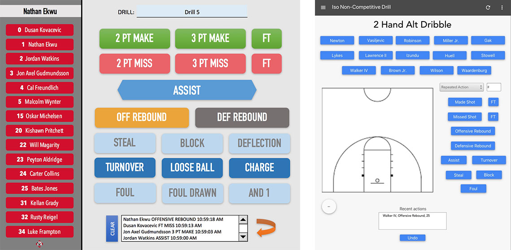

Spring 2018
ISO Athletic is a sports analytics startup at Northwestern. Our current focus is creating software for college-level basketball team managers and coaches to track statistics and gain insights.
We’re making a web application that is far superior than the traditional method of recording stats by hand. We already have committed clients for whom we’re deploying the application incrementally.
I love the team because it’s so interdisciplinary. We have MBA students, PhDs and undergraduates separated into several teams: tech, analytics, business and operations. We also have basketball managers on our team.
For the past five months, I’ve been working part-time as the UI/UX designer and front-end developer of the web application, I wireframe, design the visuals, user test, and code the application in Vue.js. Lately I’m also getting into full-stack development.
We've made an iPad web app for basketball teams that has a whole lot of functionality
for tracking, analyzing, and displaying stats.
The users of the app are the managers,
coaches, and players. I'm going to walk you through two of
the designs I played a major role in: the dashboard and the scrimmage app.
Below is the dashboard of the web app. It's the entry point to the app, designed primarily
for coaches to get the information they care about: statistics
from the most recent scrimmages and games, injuries, and upcoming games. We expect coaches to
view this page two to three times a week, because of which we only display the most recent
and relevant information.
Below is the prototype of the scrimmage app. The scrimmage app is the interface managers can use to track a scrimmage. You select a player, the action made by the player (such as free throw, foul, or 3 pointer), and the location of the action. This records an event. The manager repeatedly records events throughout the scrimmage for future aggregation and analysis of the statistics. I will explain the UX of this interface in a later section.
Additionally, below is a quick preview of the developed version of the scrimmage app (using Vue.js). It was developed by me (20-30% of code) along with the tech team. You can see some additional functionality such as selecting players, starting/stopping timer, and deleting events. You'll also notice that the design looks different. This is partly because we made some new design decisions, such as having the players and actions boxes on the left of the court so that users can move from left to right while selecting. It's also because we are using Vuetify's styling framework and minimal custom CSS to support agile development, and making certain design sacrifices along the way. Once we have more user testing and feedback from clients, we will work more on the styling.
Below are two designs created by my teammates before I joined the team.
After joining, I followed a UX design process of research, prototyping, and user testing.
The UX was incredibly challenging to design. This is because there is a lot of information
that is being tracked, and I didn’t know whether to have all the buttons available to the
user at all times, or guide them through a specific flow. After testing, the latter option
out to be disorienting for the user because the screen layout kept fluctuating. A voice-based
interface could also have been really well-suited for the application, but we decided not to
go for it because through our research we realized that there are a lot of sounds on a
basketball court, and adding to that didn’t seem sensible. I still have some new ideas
for a less overwhelming flow than the current design, that I am currently working on.
Another UX decision we had to make for the app was to decide between a
graph-based UI and a frame-based UI. A graph-based UI is like a decision tree, guiding the user
through in a specific order (i.e. player -> action -> court), whereas a frame-based
UI allows the user to select options in any order. The managers on our team had a
preference for the graph-based UI, but we will likely provide both options and let
users select their preference in the settings.
As someone who does not follow basketball or sports in general, I worked hard to understand and define the company’s visual identity. I began by interviewing each member of the exec committee to realize their vision for the company. I then studied the visual treatment of sports companies like Nike and UnderArmour, sports analytics companies like STATS and SMIT, and sports apps by companies like ESPN and FIFA. Finally, I began incrementally creating designs, getting feedback, and slowly consolidating the brand’s identity.
Through my time working for ISO Athletic, I feel I’ve become a better designer and developer. “Form follows function” has become a greater part of my design principles. Working within tight deadlines has pushed me to produce work efficiently, both as a designer and developer. I learned how to defend my design decisions against my teammates, both developers and businesspeople. The greatest challenge has been striking a balance between crafing the perfect design and compromising for the sake of rapid deployment— a challenge that constantly pushes and stretches me.